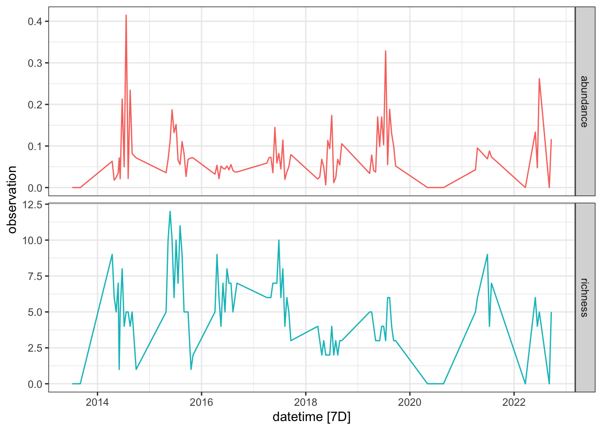
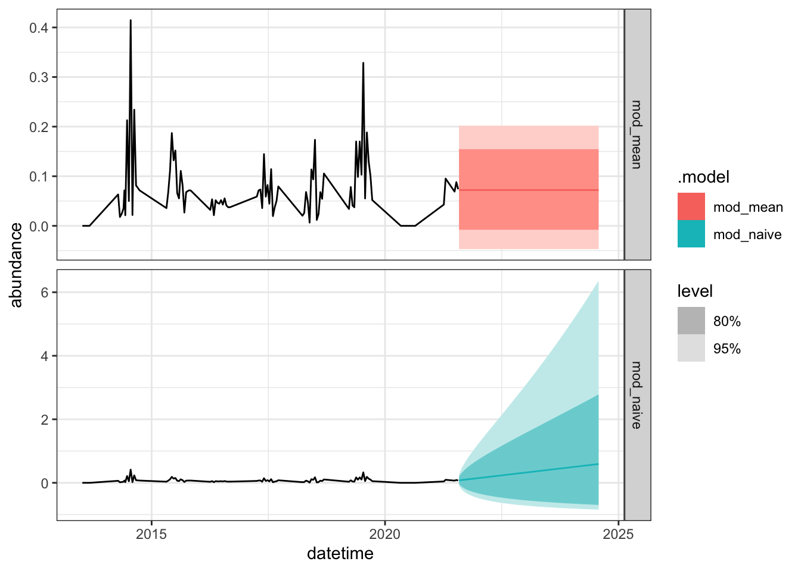
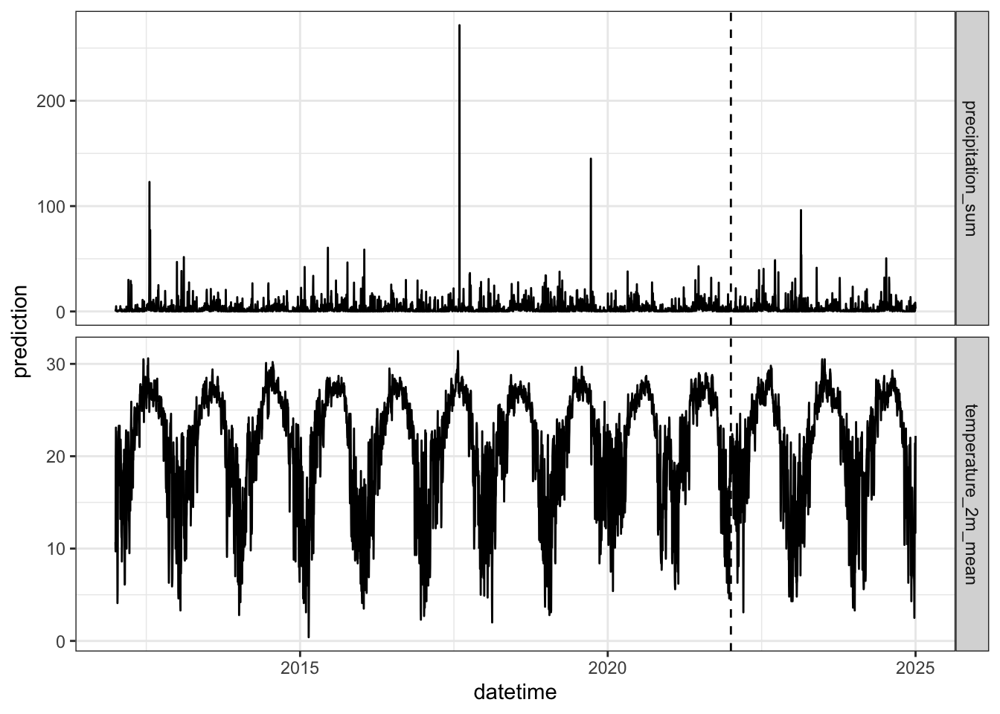
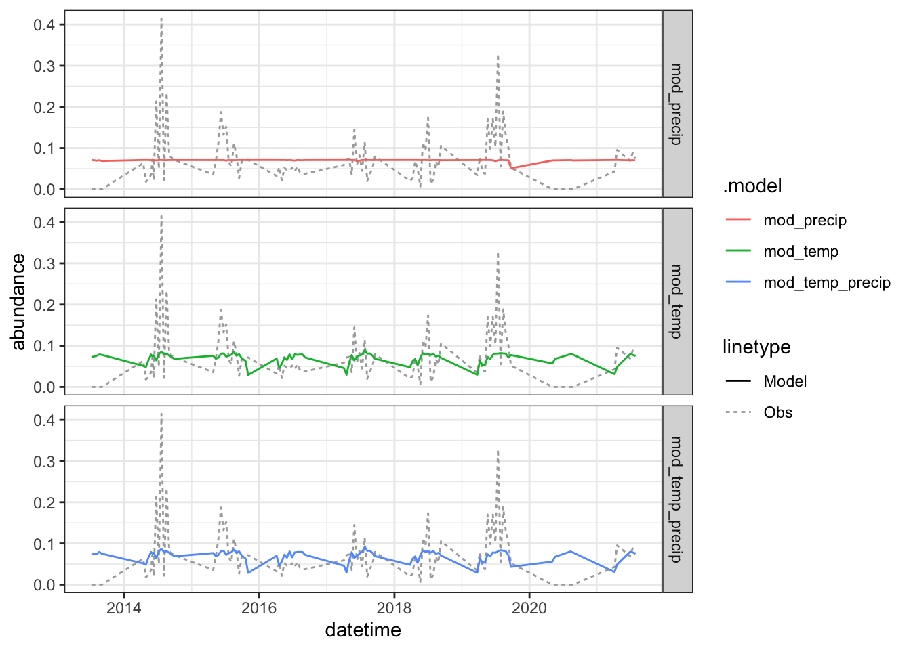
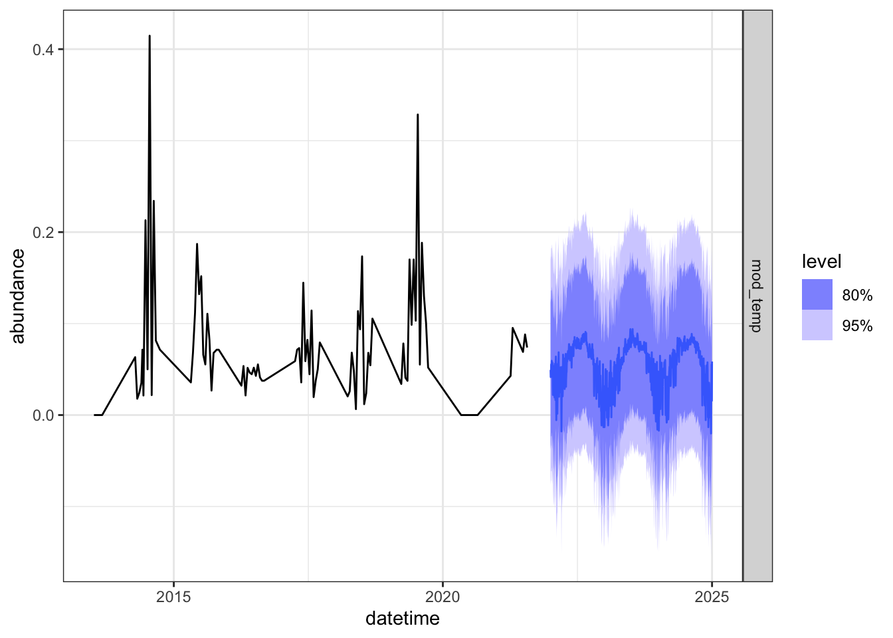
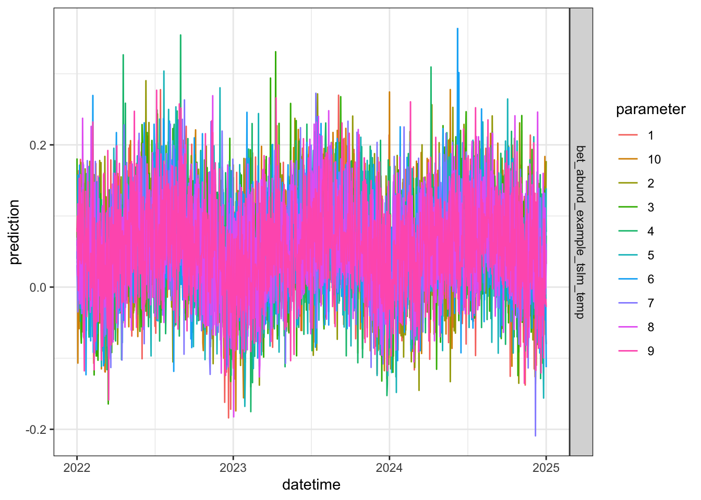
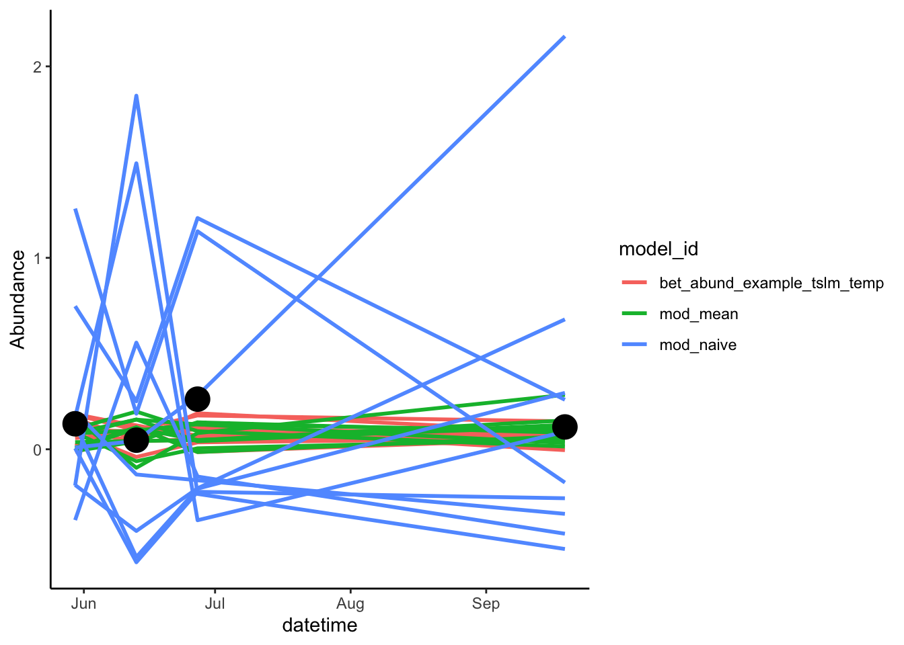
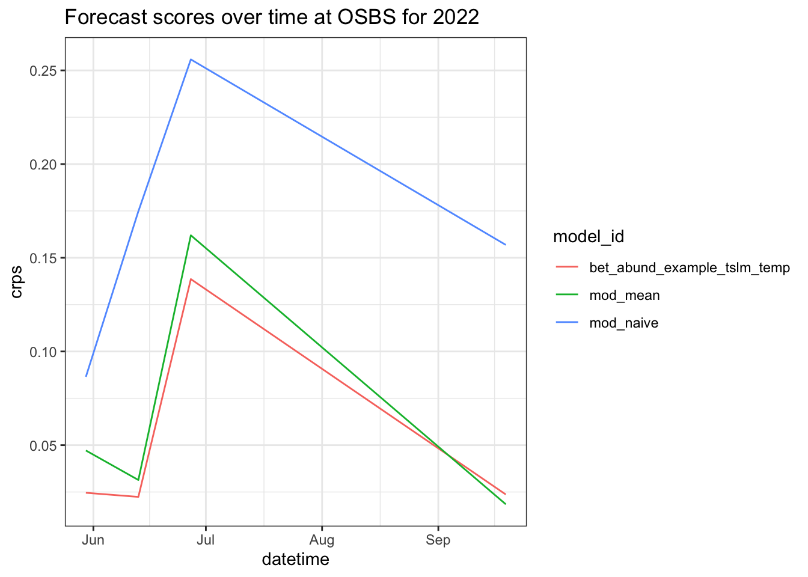

# options(
# HTTPUserAgent =
# sprintf(
# "R/%s R (%s)",
# getRversion(),
# paste(getRversion(), R.version["platform"], R.version["arch"], R.version["os"])
# )
# )
#
# install.packages("arrow", repos = "https://packagemanager.rstudio.com/all/__linux__/focal/latest")NEON workshop notes
Beetle abundances and richness projections
Tutorial: https://www.neonscience.org/resources/learning-hub/tutorials/neon-beetle-forecasting
NB: corruption with m1 chips and arrow package, may need to do a workaround
Setup
Data note: “Note that we are not downloading the target dataset from the NEON data portal. Rather, we will download a version of the dataset that has been simplified and preformatted for this challenge by the EFI RCN”, see this resource if you have an M1: https://arrow.apache.org/docs/r/articles/install.html, and run this code in the terminal
# remotes::install_github('eco4cast/neon4cast')
# remotes::install_github('eco4cast/score4cast')
library(tidyverse)── Attaching core tidyverse packages ──────────────────────── tidyverse 2.0.0 ──
✔ dplyr 1.1.4 ✔ readr 2.1.5
✔ forcats 1.0.0 ✔ stringr 1.5.1
✔ ggplot2 3.5.1 ✔ tibble 3.2.1
✔ lubridate 1.9.3 ✔ tidyr 1.3.1
✔ purrr 1.0.2
── Conflicts ────────────────────────────────────────── tidyverse_conflicts() ──
✖ dplyr::filter() masks stats::filter()
✖ dplyr::lag() masks stats::lag()
ℹ Use the conflicted package (<http://conflicted.r-lib.org/>) to force all conflicts to become errorslibrary(lubridate)
library(tsibble)Warning: package 'tsibble' was built under R version 4.3.3Registered S3 method overwritten by 'tsibble':
method from
as_tibble.grouped_df dplyr
Attaching package: 'tsibble'
The following object is masked from 'package:lubridate':
interval
The following objects are masked from 'package:base':
intersect, setdiff, unionlibrary(fable)Loading required package: fabletoolslibrary(fabletools)
library(neon4cast)
library(score4cast)
neon_site_info <- read_csv("https://www.neonscience.org/sites/default/files/NEON_Field_Site_Metadata_20231026.csv")Rows: 81 Columns: 44
── Column specification ────────────────────────────────────────────────────────
Delimiter: ","
chr (29): field_domain_id, field_site_id, field_site_name, field_site_type, ...
dbl (15): field_latitude, field_longitude, field_utm_northing, field_utm_eas...
ℹ Use `spec()` to retrieve the full column specification for this data.
ℹ Specify the column types or set `show_col_types = FALSE` to quiet this message.site_data <- read_csv("https://raw.githubusercontent.com/eco4cast/neon4cast-targets/main/NEON_Field_Site_Metadata_20220412.csv") %>%
dplyr::filter(beetles == 1)Rows: 81 Columns: 54
── Column specification ────────────────────────────────────────────────────────
Delimiter: ","
chr (34): field_domain_id, field_site_id, field_site_name, phenocam_code, ph...
dbl (20): terrestrial, aquatics, phenology, ticks, beetles, field_latitude, ...
ℹ Use `spec()` to retrieve the full column specification for this data.
ℹ Specify the column types or set `show_col_types = FALSE` to quiet this message.Data cleaning and formatting
# choose site
my_site = "OSBS"
# date where we will start making predictions
forecast_startdate <- "2022-01-01" #fit up through 2021, forecast 2022 data
# date where we will stop making predictions
forecast_enddate <- "2025-01-01"
# beetle targets are here
url <- "https://sdsc.osn.xsede.org/bio230014-bucket01/challenges/targets/project_id=neon4cast/duration=P1W/beetles-targets.csv.gz"
# read in the table
targets <- read_csv(url) %>%
mutate(datetime = as_date(datetime)) %>% # set proper formatting
dplyr::filter(site_id == my_site, # filter to desired site
datetime < "2022-12-31") # excluding provisional data Rows: 7028 Columns: 6
── Column specification ────────────────────────────────────────────────────────
Delimiter: ","
chr (4): project_id, site_id, duration, variable
dbl (1): observation
dttm (1): datetime
ℹ Use `spec()` to retrieve the full column specification for this data.
ℹ Specify the column types or set `show_col_types = FALSE` to quiet this message.# visualize target data
# explore
targets[100:110,]# A tibble: 11 × 6
project_id site_id datetime duration variable observation
<chr> <chr> <date> <chr> <chr> <dbl>
1 neon4cast OSBS 2017-06-12 P1W richness 7
2 neon4cast OSBS 2017-06-26 P1W abundance 0.0821
3 neon4cast OSBS 2017-06-26 P1W richness 10
4 neon4cast OSBS 2017-07-10 P1W abundance 0.0446
5 neon4cast OSBS 2017-07-10 P1W richness 6
6 neon4cast OSBS 2017-07-24 P1W abundance 0.114
7 neon4cast OSBS 2017-07-24 P1W richness 8
8 neon4cast OSBS 2017-08-07 P1W abundance 0.0196
9 neon4cast OSBS 2017-08-07 P1W richness 4
10 neon4cast OSBS 2017-08-21 P1W abundance 0.0375
11 neon4cast OSBS 2017-08-21 P1W richness 6 # vis
targets %>%
as_tsibble(index = datetime, key = variable) %>%
autoplot() +
facet_grid(variable ~ ., scales = "free_y") +
theme_bw() +
theme(legend.position = "none")Plot variable not specified, automatically selected `.vars = observation`
Create the training dataset
targets_train <- targets %>%
filter(datetime < forecast_startdate) %>%
pivot_wider(names_from = variable, values_from = observation) %>%
as_tsibble(index = datetime)Forecast beetle abundance: null models
# specify and fit models
# Using a log(x + 1) transform on the abundance data
mod_fits <- targets_train %>%
# timeseries tibble (tsibble)
tsibble::fill_gaps() %>% # gap fill the data for the random walk model
fabletools::model(
mod_mean = fable::MEAN(log1p(abundance)), # generate a forecast from the historical mean plus the standard deviation of the historical data
mod_naive = fable::NAIVE(log1p(abundance))) # random walk model, requires gap filling. Generates a forecast from the current observation plus random process noise
# make a forecast
fc_null <- mod_fits %>%
fabletools::forecast(h = "3 years")
# visualize the forecast
fc_null %>%
autoplot(targets_train) +
facet_grid(.model ~ ., scales = "free_y") +
theme_bw()
Get climate data
# Get climate data
path_to_clim_data <- "https://data.cyverse.org/dav-anon/iplant/projects/NEON/ESA2024/forecasting_beetles_workshop/modeled_climate_2012-2050_OSBS_CMCC_CM2_VHR4.csv"
clim_long <- read_csv(path_to_clim_data) %>%
filter(datetime <= forecast_enddate)Rows: 28490 Columns: 6
── Column specification ────────────────────────────────────────────────────────
Delimiter: ","
chr (4): site_id, model_id, variable, unit
dbl (1): prediction
date (1): datetime
ℹ Use `spec()` to retrieve the full column specification for this data.
ℹ Specify the column types or set `show_col_types = FALSE` to quiet this message.# make a tsibble object
clim_long_ts <- clim_long %>%
as_tsibble(index = datetime,
key = c(variable, model_id))
# make wide
clim_wide <- clim_long %>%
select(-unit) %>%
pivot_wider(names_from = variable, values_from = prediction)
# visualize climate data
clim_long_ts %>%
ggplot(aes(datetime, prediction)) +
geom_line() +
facet_grid(variable ~ ., scales = "free_y") +
geom_vline(xintercept = lubridate::as_date(forecast_startdate),
lty = 2) + # line signifies splitting training data and forecast data
theme_bw() +
theme(legend.position = "none")
Climate training dataset
# subset into past and future datasets, based on forecast_startdate
clim_past <- clim_wide %>%
filter(datetime < forecast_startdate,
datetime > "2012-01-01")
clim_future <- clim_wide %>%
filter(datetime >= forecast_startdate,
datetime <= forecast_enddate)
# combine target and climate data into a training dataset
targets_clim_train <- targets_train %>%
left_join(clim_past)Joining with `by = join_by(site_id, datetime)`Specify, fit, visualize
# specify and fit model
mod_fit_candidates <- targets_clim_train %>%
fabletools::model(
mod_temp = fable::TSLM(log1p(abundance) ~ temperature_2m_mean),
mod_precip = fable::TSLM(log1p(abundance) ~ precipitation_sum),
mod_temp_precip = fable::TSLM(log1p(abundance) ~ temperature_2m_mean + precipitation_sum))
# look at fit stats and identify the best model using AIC, where the lowest AIC is the best model
fabletools::report(mod_fit_candidates) %>%
select(`.model`, AIC)Warning in report.mdl_df(mod_fit_candidates): Model reporting is only supported
for individual models, so a glance will be shown. To see the report for a
specific model, use `select()` and `filter()` to identify a single model.# A tibble: 3 × 2
.model AIC
<chr> <dbl>
1 mod_temp -525.
2 mod_precip -521.
3 mod_temp_precip -524.# visualize model fit
# augment reformats model output into a tsibble for easier plotting
fabletools::augment(mod_fit_candidates) %>%
ggplot(aes(x = datetime)) +
geom_line(aes(y = abundance, lty = "Obs"), color = "dark gray") +
geom_line(aes(y = .fitted, color = .model, lty = "Model")) +
facet_grid(.model ~ .) +
theme_bw()
None of the models predict the peaks, what are we missing here? Add in more predictors!
Take best model, make forecats
# focus on temperature model for now
mod_best_lm <- mod_fit_candidates %>% select(mod_temp)
report(mod_best_lm)Series: abundance
Model: TSLM
Transformation: log1p(abundance)
Residuals:
Min 1Q Median 3Q Max
-0.07656 -0.03500 -0.00914 0.02044 0.26518
Coefficients:
Estimate Std. Error t value Pr(>|t|)
(Intercept) -0.032983 0.050264 -0.656 0.5134
temperature_2m_mean 0.003969 0.001963 2.022 0.0461 *
---
Signif. codes: 0 '***' 0.001 '**' 0.01 '*' 0.05 '.' 0.1 ' ' 1
Residual standard error: 0.05809 on 91 degrees of freedom
Multiple R-squared: 0.04299, Adjusted R-squared: 0.03247
F-statistic: 4.088 on 1 and 91 DF, p-value: 0.046126# make a forecast
# filter "future" climate data to target climate model
fc_best_lm <- mod_best_lm %>%
fabletools::forecast(
new_data =
clim_future %>%
as_tsibble(index = datetime))
# visualize the forecast
fc_best_lm %>%
autoplot(targets_train) +
facet_grid(.model ~ .) +
theme_bw()
Format to submit forecast
# update dataframe of model output for submission
fc_best_lm_efi <- fc_best_lm %>%
mutate(site_id = my_site) %>% #efi needs a NEON site ID
neon4cast::efi_format() %>%
mutate(
project_id = "neon4cast",
model_id = "bet_abund_example_tslm_temp",
reference_datetime = forecast_startdate,
duration = "P1W")
# visualize the EFI-formatted submission
fc_best_lm_efi %>%
as_tsibble(index = datetime,
key = c(model_id, parameter)) %>%
ggplot(aes(datetime, prediction, color = parameter)) +
geom_line() +
facet_grid(model_id ~ .) +
theme_bw()
# file name format is: theme_name-year-month-day-model_id.csv
# set the theme name
theme_name <- "beetles"
# set your submission date
file_date <- Sys.Date()
# make sure the model_id in the filename matches the model_id in the data
# NOTE: having the text string "example" in the file name will prevent this
# submission from being displayed on the challenge dashboard or being included
# in statistics about challenge participation.
efi_model_id <- "bet_abund_example_tslm_temp"
# format the file name
forecast_file <- paste0(theme_name,"-",file_date,"-",efi_model_id,".csv.gz")
# write the file to your working directory
write_csv(fc_best_lm_efi, forecast_file)
# submit the file
# neon4cast::submit(forecast_file = forecast_file)How to score your own forecast
# filter to 2022 because that is the latest release year
# 2023 is provisional and most sites do not yet have data reported
targets_2022 <- targets %>%
dplyr::filter(
datetime >= "2022-01-01",
datetime < "2023-01-01",
variable == "abundance",
observation > 0)
# list of target site dates for filtering mod predictions
target_site_dates_2022 <- targets_2022 %>%
select(site_id, datetime) %>% distinct()
# filter model forecast data to dates where we have observations
mod_results_to_score_lm <- fc_best_lm_efi %>%
left_join(target_site_dates_2022,.) %>%
dplyr::filter(!is.na(parameter))Joining with `by = join_by(site_id, datetime)`# score the forecasts
mod_scores <- score(
forecast = mod_results_to_score_lm,
target = targets_2022)
head(mod_scores)# A tibble: 4 × 17
model_id reference_datetime site_id datetime family variable observation
<chr> <chr> <chr> <date> <chr> <chr> <dbl>
1 bet_abund_e… 2022-01-01 OSBS 2022-05-30 sample abundan… 0.133
2 bet_abund_e… 2022-01-01 OSBS 2022-06-13 sample abundan… 0.0476
3 bet_abund_e… 2022-01-01 OSBS 2022-06-27 sample abundan… 0.262
4 bet_abund_e… 2022-01-01 OSBS 2022-09-19 sample abundan… 0.117
# ℹ 10 more variables: crps <dbl>, logs <dbl>, mean <dbl>, median <dbl>,
# sd <dbl>, quantile97.5 <dbl>, quantile02.5 <dbl>, quantile90 <dbl>,
# quantile10 <dbl>, horizon <drtn>Are these scores better than our null models? Here, we will score the mod_mean and mod_naive models, and combine the null model scores with the scores for our best_lm forecast above. Then we can compare.
# get scores for the mean and naive models
# the fc_null object has scores from both models
# note: we need to add site_id back in for efi_format() to work
fc_null_efi <- fc_null %>%
mutate(site_id = my_site) %>% #efi needs a NEON site ID
neon4cast::efi_format()
# filter to dates where we have target data from 2022
mod_results_to_score_null <- fc_null_efi %>%
left_join(target_site_dates_2022,.) %>%
dplyr::filter(!is.na(parameter))Joining with `by = join_by(site_id, datetime)`# score the forecasts for those dates
mod_null_scores <- score(
forecast = mod_results_to_score_null,
target = targets_2022) Joining with `by = join_by(model_id, site_id, variable)`# stack the scores for our best_lm and the null models
# forcing reference_datetime to be the same type in both tables
# so they will stack
all_mod_scores <- bind_rows(
mod_null_scores %>% mutate(
reference_datetime = as.character(reference_datetime)),
mod_scores %>% mutate(
reference_datetime = as.character(reference_datetime)))Visualize the models
mod_results_to_score_lm <- mod_results_to_score_lm |> select(site_id,datetime,parameter,model_id,family,variable,prediction)
rbind(mod_results_to_score_null,mod_results_to_score_lm) %>%
ggplot(., aes(datetime, prediction, color = model_id, group=interaction(parameter, model_id))) +
geom_line(lwd = 1)+
geom_point(aes(datetime, observation), color = "black", size = 6, inherit.aes = F, data = targets_2022)+
ylab("Abundance")+
theme_classic()
Plot scores
all_mod_scores %>%
ggplot(aes(datetime, crps, color = model_id)) +
geom_line() +
theme_bw() +
ggtitle("Forecast scores over time at OSBS for 2022")
Which model(s) did best?
What might explain the differences in scores between the different models?